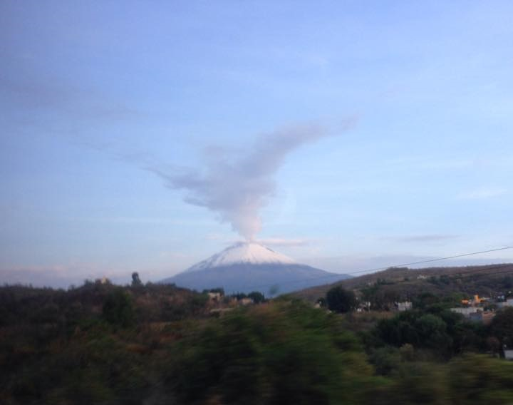

Gestoría

Capacitación

Consultoría
CATALOGO DE SERVICIOS
GESTORÍA
- Atención a visitas de inspección de PROFEPA, CNA, SOAPAP, Secretaria de Energía, SDRYOT, Protección Civil, Secretaria del Trabajo y ASEA.
- Tramites ante dependencias gubernamentales: SEMARNAT, STPS, PROFEPA, CNA, SOAPAP.
- Elaboración y gestión de:
- Manifestación de Impacto Ambiental
- Informe preventivo de Impacto Ambiental
- Estudio de Riesgo Ambiental
- Programa Interno de Protección Civil
- Cédula de Operación Anual
- Inventario Anual de Emisiones
- Plan de manejo de residuos
- Estudio de compatibilidad de sustancias químicas
- Estudios de suelo
- Clasificación del riesgo de incendio (NOM-002-STPS-2010).
- Estudio del riesgo potencial generado por maquinaria y equipo (NOM-004-STPS-1999).
- Estudio del riesgo potencial generado por sustancias químicas peligrosas (NOM-005-STPS-1998).
- Integración y capacitación a comisiones de seguridad e higiene (NOM-019-STPS-2011).
- Determinación de equipo de protección personal (NOM-017-STPS-2008).
- Auditoría Ambiental para la Certificación como Industria Limpia.
- Pre diagnóstico de auditoría ambiental en base a la NMX-AA-162-SCFI-2012.
- Licencia Ambiental única.
- Licencia de Funcionamiento.
- Verificación al cumplimiento de plan de acción de auditoría ambiental.
- Seguimiento de recomendaciones de estudios de riesgo.
- Registro como generador de residuos peligrosos.
- Planes de manejo y Bitácoras de residuos peligrosos.
- Planes de manejo de residuos de manejo especial.
- Caracterización de suelos contaminados con hidrocarburos (NOM-138-SEMARNAT/SSA 1-2012).
CAPACITACIÓN
- Interpretación e implementación de ISO 14001
- Interpretación e implementación de ISO 18001
- Interpretación e implementación de ISO 50001 (Sistema de gestión de energía)
- Manejo de Residuos Peligrosos y no peligrosos.
- Legislación Ambiental Mexicana.
- Implementación de Sistemas Integrados: ISO 14001, ISO 50001 e ISO 18001.
- C-TPAT
CONSULTORÍA
- Asesoría en el Programa de Autogestión en Seguridad y Salud en el Trabajo de la STPS.
- Asesoría para el desarrollo de sistemas de administración de energía, seguridad y ambiental ISO9001 e ISO 14000
- Cumplimiento de la normatividad ambiental y laboral
- Implementación de programa C-TPAT
